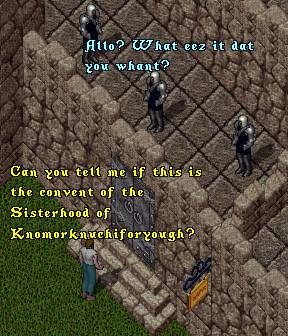
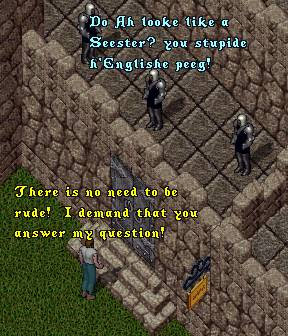
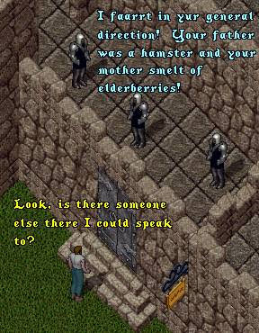
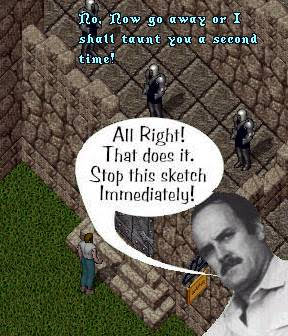
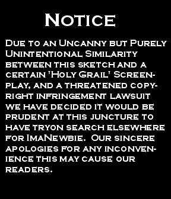
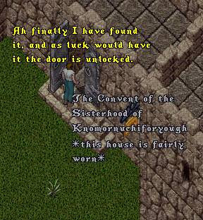
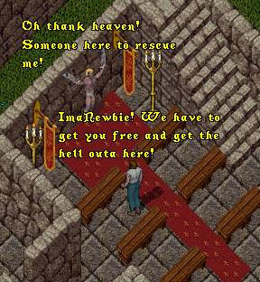
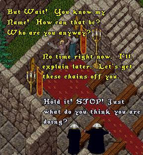
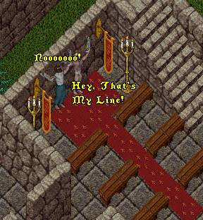

Episode 106: We're not in Kansas anymore, Toto! (Part 4) - Ok, folks, hang on to your seats. This is the episode where ImaNewbie and Tryon finally meet face-to-face. But first, Tryon has to find the Convent where Ima is held captive. As this episode opens, Tryon approaches a keep, and inquires as to whether this building is in fact the convent he seeks.





OK! OK! So I couldn't resist another cheap Monty
Python sketch rip-off ... So Sue Me! Anyway, I
know you are all anxious to see the momentous
moment when ImaNewbie comes face-to-face with
Tryon, his creator, so we'll just skip ahead to
the next scene. As this scene opens Tryon has
come upon another keep, and checking the sign
discovers that it is indeed the infamous Convent
where ImaNewbie is being held captive.



ACK! (insert suspensful music here)
The Sisters Have Returned!
